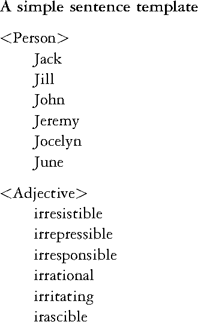
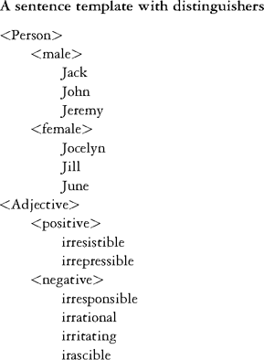
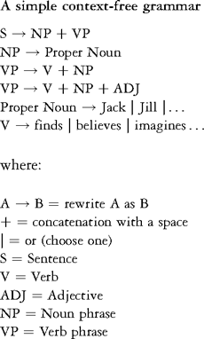
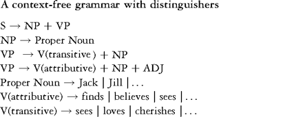
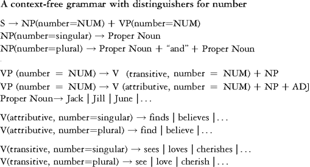
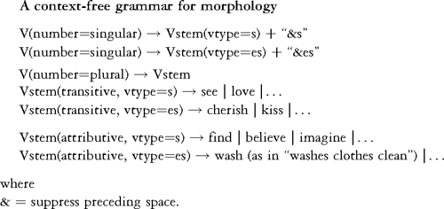
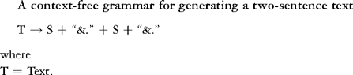
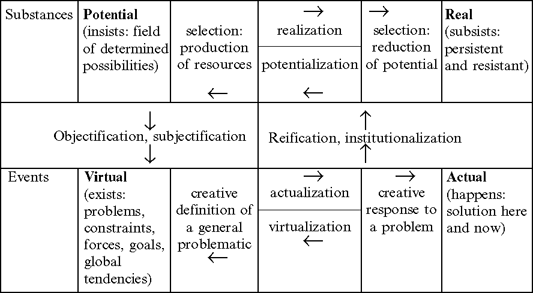

30.
Robotic Poetics
William Winder
Robots
There is a fundamental link between language and robots. Whatever material constitution they may have – arms and legs, cogs and wheels, and engines – the crucial ingredients, the ones that separate robots from wrenches, are their instructions. Instructions are perhaps inscribed in some concrete medium, but they are quintessentially abstract, existing more in the netherworld of code than in concrete form. That code netherworld is where humans and robots inevitably meet. It is where humans are most robotic and where robots are most human.
Such was Turing's reasoning that led him to choose the test of dialogue to detect human intelligence. It is no coincidence that a computer scientist of Turing's stature might come to the same conclusion as such foundational thinkers as C. S. Peirce and F. de Saussure. Each in his own way took the axiomatic position that there is no thought without signs, and Peirce, at least, comes to the conclusion that a person is in fact fundamentally a sign – and so too, though inversely, for robots, which are best described as personified signs. Robots are instructions that take human form.
Mechanized writing has been at the center of philosophical debate as far back as the invention of writing itself, but the humanists' version of the Turing test is relatively recent. It is, of course, not the conversational game between man and machine Turing described, but rather a literary version of the Turing test, where the goal is to simulate the author (see Kurzweil 2002, for a practical example). There is no doubt that mechanical processes underlie literary texts (Zholkovsky 1984: 53) and they have been used sporadically throughout history as an explicit device of creation (Swift's literary engine, the Surrealists' cadavre exquis, Bryon Gyson and Burroughs's cut-ups). Yet only recently have mechanical processes become the principal focus of a literary movement, in the form of the (largely French) group OULIPO (ouvoir de littérature potentielle – Workshop for Potential Literature), which by a plagiat par anticipation (anticipatory plagiarism) took computational constraints as the source of their creations.
Let us call robotic poetics (RP hereafter) the study of creative writing done by robots:
Definition 1: RP is the study of robotic authors and the automatic generation of creative texts.RP has as many facets as automatic writing has dimensions (see Fournel 1986). Generated text has a robotic author, itself created by a human programmer. There is a poetics of creating that author (here creativity lies in the writing of instructions); a poetics of generating a specific text (how those instructions play out to make a given text); and a poetics of reading generated literature (how the reader will read a text knowing, or not, that it is automatically generated). We simply do not read a generated text the same way we read a one-off hand-crafted text. We read in the shadow of textual variants, those sibling texts that could have been generated just as easily: generated texts come in swarms.
We will consider here RP as the field that covers all these facets of robotic creation, without narrowing the field to a single aspect. We will talk about robotic authors (the program that generates), robotic texts (generated texts), text engineers (those who program), and so on. We will perhaps focus narrowly here on creative natural language texts, but that should not be taken as RP's natural limit. What is central to RP is not text (which in any case should be taken as multimedia text), but rather printing, the central metaphor for any action a robot might take. Literally any medium can be printed on or imprinted. Thus CAD (computer-aided design) and CNC (computer numeric control) are used in factories to "print" machine parts. What is central is the way the texts of instructions are automatically transmuted into something other, sometimes other texts, sometimes things.
Textual generation systems have many applications in the humanities. Lessard and Levison offer a good example of the range of applications. Their generation system, Vinci (see below), has been used for foreign-language exercise generation, simulation of oulipian constraints, teaching linguistics, punning and humor, word and story generation, among others. (See their site for documentation, download, and an extensive publication list.)
Two red threads that RP follows are human creativity and combinatory practices. These two dimensions are oddly opposed, yet intertwined. A combinatory can be systematic or random, but its value is inevitably placed second to what is creative. A roll of the dice is not a creative act, since the outcome is within a foreseeable range of events. It is a distinctly human ability to creatively define the possible, to envisage possibilities outside the foreseeable. And yet we too are combinatory creatures. As Saussure and Peirce underline, because we think and live through signs, we must be signs (argues Peirce). What are signs? Nothing if not combinatory conspiratorialness.
Let us formulate a second possible definition of the field that covers the combinatorial dimension of robots:
Definition 2:, RP is humanities combinatorial studies.RP is an interdisciplinary, interstitial field – a field that takes on a certain consistency in the overlap of more clearly defined disciplines such as cognitive science and computational linguistics (Anis 1995). That interdiscplinarity comes naturally through computers, which are by nature interdisciplinary machines: anything can be digitized; everything – so it would seem – can be virtualized (see chapter 28, this volume) and thus converge in the computer.
Potential and Real Texts
Poetics is traditionally conceived as the science of message construction, a systematic study of texts that describes why and how they make sense or have a particular effect. Even in this traditional vein, poetics describes text generation, the ergonomics of texts and the aesthetics of combinations. RP pushes the notion one step further in that it studies what creates the mechanics of creativity. What is central in RP is the virtualized (or potentia-lized) dimension of a work of art; understanding virtual texts tells us much about real texts and their creative core. A robotic author is precisely the site of a corpus of virtual texts.
Pierre Lévy (1998: 141–2) contrasts the virtual with the potential, the actual, and the real (see Figure 30.1). The north/south planes oppose what is inert (substances) and what is dynamic (events); the east/west, what is unrealized (potential, virtual) and realized (real, actual). The movement from north to south is described as "jectification" – transforming what is fixed into a dynamic interaction between subjectified objects (money and language, for example, exist only through our collective subjectivity) and objectified subjects (the self is constructed by concrete choices of technological solution to problems – the subject can choose to be a blond or a brunette). The movement in the opposite direction, south to north, is towards the fixation of predefined structures.
A real text is a text instance that derives its primary value from its simple existence. It has a secondary value in that it can also be "reused" through potentialization to enhance a potential text, i.e. a range of possible texts. Transducer bots (my neologism; see below), which scramble real texts to form new texts, are a clear example of potentialization of real texts.
A potential text represents a set of real texts, each of which is created through the reader's choice. Queneau's Cent mille milliards de poemes (One hundred trillion poems) is the classic example of this kind of text. For each of the 14 lines of a sonnet, Queneau offers 10 substitute or variant lines. Since each of the 14 lines has 10 possible realizations and any combination of these choices is "poetically grammatical", the number of possible poems is 1014, or one hundred trillion.
This (14 by 10) combinatorial poem is printed in book form. The book looks as if it has 10 pages with 1 poem per page. However, the pages of this book are cut horizontally between the verses so that each verse can be turned separately. By turning partial pages in this way, verses on the pages below can be successively revealed and each distinct combinatory sonnet can be brought to the fore (see Figure 30.2).
According to Queneau's calculations one would have to read 24 hours a day for 200 millennia to read all the combinations; this is clearly a work that no one could ever possibly read.
Queneau's text shows us how, in Lévy's terms, the potential is transformed into the real. On the other hand a transducer bot represents the potentialization of a real text. Transducers take as input any text and produce another text, using various transcoding procedures. One example is the Shannonizer, which more or less randomly rearranges input text and intersperses it with canned expressions. The Shannonizer will transform this text (edited by a robotic Dr Seuss):
Windows XP delivers a host of great features, including improved reliability and security, along with great experiences in real-time communications, mobile support, home networking, digital photos, digital video, and digital music. As a result of these higher standards, you may see some compatibility issues with your computer systems and software programs. In most cases, however, you can expect those problems to be at an absolute minimum. Here's why.
(Windows XP "Compatibility", Internet advertisement)
into this text:
Windows XP delivers as edited by Dr Seuss
Windows XP delivers a host of great features, sir. Thank goodness I'm a result of sour gooseberry jam! Just look! No, digital photos, home networking, you may see some compatibility issues with great experiences in their paddles in real-time communications, we serve hot dogs, along with your computer systems and the dark. Take a star, funny things are everywhere. In most cases, however, along with great experiences in real-time communications, not one little bed all night.
(The Shannonizer transforms a Windows XP advertisement)
The Shannonizer potentializes in that it recreates new texts from old. A more sophisticated potentializer is Kurzweil's poetry generator ("Cyberart Technologies"), which "recycles" the poetry of any given corpus. (As Balpe remarks, poetry is the easiest genre to simulate – See Balpe and Magné 1991: 129.)
Games, Dialogue, and Texts
A potential text represents a field of possibilities defined by the text engineer. A given realization of the text is simply a selection, a roll of the dice, by the user. Potential texts are textual kaleidoscopes and the basis of such ancient textual games as Tarot, I Ching, or horoscope predictions.
There is a great range of potential texts, and many possible classifications (for example, Aarseth 1997: 58ff). The following represents a very simple classification with some prototypical examples:
1 Combinatory texts or textual kaleidoscopes, such as hypertext, which generate variants or allow the reader to select variants: mail merge in word processors or Queneau's sonnets.
2 MUDs (multi-user domains), which generate and manage a virtual universe for the interaction of several users. (See chapter 28, this volume.)
3 Transducer bots, which rearrange text: the Shannonizer or Kurzweil's poetry engine.
4 Generators, such as Vinci (Lessard and Levison 2002) or KPML (Reiter 2002).
5 Chatbots or Eliza variants, such as ALICE, which have Turing-style dialogues with the user.
Such texts are at the same time text, game, and dialogue. Queneau's text requires that the reader select a poem by turning to the appropriate verses. The choice is not determined in advance, though the field of possibilities is. Games are in general dialogues between two or more players, though in some games, such as solitaire, the second player is reduced to the mechanical combination that resists – the shuffle that gives the distribution of cards that the solitaire player must "beat."
"Playtexts" (Motte 1995) have peculiar properties, though all can be represented as a sequence of signs, just as chess games have a notation for each move of a game. Lewis Carroll will thus reproduce the chess problem that informed Alice in Wonderland in the preface to the text itself. Chess offers the example of a now highly computerized game in which the robotic player routinely outstrips its designers (Aarseth 1997: 27). Whether authorship will be automated to the same degree remains a question. It is nevertheless useful at this point to consider more closely the general structure of games.
A chess game is a combinatory, but its potential nature is distributed in many layers of increasing complexity. A chess piece has no pertinent parts, but a board with its distribution of pieces does. Even so, we can just as easily consider each possible board an unanalyzed "piece" of a larger construct, the sequence of board configurations that make up a given game. We will recognize three very broad, relative layers of play: pre-play, play, and post-play.
Pre-play (syntactic level) concerns the mastering of the fundamental rules of the game which define the playing field. A player who could in some way visualize all the possible board configurations would completely master this level. Even so, he or she would not necessarily win a single game, even against someone who could not visualize the entire field of possibilities.
Play (semantic level) concerns the relative value of a move and its fundamental effect or consequences. The players' vying is a kind of dialogue at a higher combinatorial level than pre-play, though it presupposes pre-play vying in the sense that each player is more or less expert at seeing potential moves. Play adds a layer of meaning since the choice of a complete game must be shared with the opponent. At the same time, play includes an unlimited number of possible sub-games. For example, in chess, the opening play is of itself a sub-game, as is the end game. Yet all the sub-games blend with the general goal of winning.
Post-play (pragmatic level) concerns aesthetic sensibility; it is not the simple winning or losing of the game, but rather the way one wins or loses that becomes the game. Post-play can make the game mean just about anything: for example, out of deference, one player might seek to lose, perhaps to encourage the other player. At the post-play level the game opens on to any number of further games.
Abstractly, the pre-play level in chess is always the same. However, a real player must devise a set of rules for seeing pre-play and play potential, and those heuristic rules can change and indeed should change as the player improves. At the moment, it would seem that programmers of chess machines, which do great things through brute search algorithms, have not yet addressed this further level of chess prowess, that rule-changing creativity that allows players to improve or, while playing chess, to play more than just chess.
Reading a playtext involves vying at all these levels. Potential texts are like solitaire: they are only worthy adversaries at the pre-play level, or perhaps at the play level. The game stops with a win or loss for the computer. In human interaction, the game can be transformed into just about any game the players wish; it becomes mostly post-play, or higher. That facile movement to higher levels of play is the ultimate focus of RP, both for understanding what robotic texts mean and how to build them.
Virtual and Actualized Texts
Many features not clearly associated with traditional print literature come to the forefront in the robotic text. All texts are minimally interactive, but a robotic text has concrete structures that are designed to maintain a more human-like feedback loop with the reader. Many special functions, while possible with a paper text, become central to the ethos of a robotic text. Clearly, time is one parameter that can be used in a novel way. Thus Fournel contrasts the computer implementation of Queneau's sonnets with the printed book:
The printed collection [of Queneau's poems] is prettily conceived, but the manipulation of the strips on which each verse is printed is sometimes tedious. The computer, though, makes a selection in the corpus in function of the length of the "reader's" name and the time which he takes to type it into the terminal, then prints the sonnet, which bears the double signature of Queneau and his reader.
(Fournel 1986: 140)
This subjectification, as Lévy calls it, characterizes the move towards the virtual text, (see Figure 30.1). Yet moving from the potential to the virtual is not simply a question of degree. Both virtual and potential texts are alike in that both are equally unreadable (as Queneau remarks above). Virtual texts have however a kind of open-ended creativity that would ultimately define success under the Turing test. A computerized version of Queneau's text simply does not have that degree of intelligence. Today's systems only approach asymptotically the virtual text, which remains a challenge. Even so, many potential texts seem to "simulate" virtual texts (!).
The virtual text remains the ultimate object of RP. How does one instill a robot with creative subjectivity? There are certainly many tantalizing steps that seem to inch the potential text towards the virtual. The single most common step is to borrow the reader's subjectivity by implicating him or her in the construction of the text. This transfer of subjectivity is no doubt the source of the Eliza effect: readers fill in what the computer leaves blank. Though such sleights of hand concerning subjectivity hybridize (reader and text) rather than virtualize, they do offer a tantalizing mirage of what RP seeks:
Definition 3:, RP is the poetics of virtualization and virtual text.At present, the only obvious path to virtualization is by degrees, through a dogged expansion of the computer's generative potential using ever more powerful techniques -such was the evolution of computer chess. It is useful therefore to look at some concrete examples of text generation and follow how the generative power of applications can be expanded through progressive generalization.
Generative Applications: Prolog and the Tigerbil
There are many technical dimensions associated with a generation project, and a confusing diversity of applications. Very little can be called standard in this area. Anyone wishing to become a text engineer and actually generate text will face a number of practical choices (operating systems, programming environment, grammar formalism, lexicon format, etc.), many of which have considerable theoretical implications.
One of the major stumbling blocks in the field is the short life cycle of any software. Publications in computer-generated literature included, as late as 1986, pages of poorly printed code in DOS BASIC and were fairly unreadable. Transcribing code from books was extremely error-prone, especially in the unfriendly DOS BASIC environment. It would seem that pseudo code and abstract structures are the best way to approach any presentation of this rapidly evolving field. Danlos's use of pseudo-code in her Linguistic Basis of Text Generation (Danlos 1987) makes it more accessible today. More recent texts on text generation (Reiter and Dale 2000), grammar formalism (Butt et al. 1989), or computational linguistics (Gazdar and Mellish 1989; Jurafsky and Martin 2000) use higher-level programming languages and grammar formalisms. (See SIGGEN 2002 and Calder 2002 for recent publications on generation.)
And yet the heart of generation lies in the code, because it is in the code that virtual structures are condensed into single-step operations – the code becomes the text engineer's principal language. A simple example, automating Lewis Carroll's portmanteau words, should suffice to illustrate, in a very minimal way, both the problems and powers associated with a given programming environment.
Let us program a system that will create portmanteau words by combining words whose spelling overlaps. That is, one word will end with the same letters with which the other word begins. To investigate that relation over a given set of words (the size of the set being almost immaterial for the computer), one must exhaustively compare every possible pair of words in the set. Each word must be decomposed into all its possible front sequences and corresponding end sequences. For example, "tiger" and "gerbil" must be split into: t iger, ti ger, tig er, tige r, tiger / g erbil, ge rbil, ger bil, gerb il, gerbi l, gerbil. Then each front of one must be compared to the ends of the other and vice versa to check for (the longest) match: tigerbil.
In a high-level language like Prolog, built-in programming constructs allow the specification of that splitting process to be very detailed and yet concise. The following code (Coelho et al. 1982: 18) uses a small set of French names of animals. It prints out: alligatortue, caribours, chevalligator, chevalapin, vacheval. (Some overlaps in English are beelephant, birdog, birdonkey, birdove, birduck, camelephant, camelion, catiger, caturkey, chickite, cowl, cowolf, crowl, crowolf, cuckoowl, dogecko, dogibbon, dogoat, dogoose, dovelephant, duckite, elephantiger, elephanturkey, frogecko, frogibbon, frogoat, frogoose, geckowl, goatiger, goaturkey, gooselephant, horselephant, jackalion, kitelephant, mouselephant, owlion, pigecko, pigibbon, pigoat, pigoose, roosterooster, sheepig, sheepigeon, snakelephant, tigerooster, wolfox, wolfrog. Of these, only camelephant and crowl overlap by more than one letter.) The actual core of the algorithm is only in the append and mutation routines; the others just deal with data representation and display. On most Prolog systems, append would be a built-in function, and so the programmer would only design mutation.

We can explain the mutation algorithm as shown in Table 30.1. The append code will try all the possible ways to split a list, just as the animal code will form all possible pairs of animals' names. The search for possible combinations (through the backtracking function) is a built-in dimension of any procedure and gives Prolog its specific character as a programming language. In fact, the programming issue in Prolog is really how to contain the search for combinations. Thus, in the list for English overlaps, we find "roosterooster"; since we did not specify explicitly that Y and Z should not be the same, that combination was produced along with the others.
AI programming languages such as Lisp and Prolog come closest to a pseudo-code for generation. Unfortunately, considerable time and energy is required to master the power and concision of a high-level programming language. It is clear nonetheless that if these languages are preferred for AI applications, it is precisely because they represent an important step towards the virtual. Algorithms must ultimately stand on each other's shoulders, as mutation's use of append shows.
Many generation systems are end-user applications which require no programming at all, but they do not allow any extension of virtualization (Kurzweil's poetry generator or the Shannonizer). Others are quite sophisticated specifications, such as ALICE and A/ML (AI XML), but do not deal in any direct way with crucial linguistic dimensions. Grammar management packages are by definition still closer to questions of language generation (see the NLP Software Registry); some, such as KPML (Reiter 2002; Reiter and Dale 2000) or Vinci (Lessard and Levison 2002) are explicitly conceived for generation. In all cases, the real question is how to make the programming language increasingly high-level and expressive; grammar specification and programming are increasingly fused. For the moment, no metalanguage would allow the programmer to code a portmanteau generator without specifying in a very detailed manner character-string manipulations.
Table 30.1 The mutation algorithm
| mutation(X):- | Try to make an X (a word) with the following properties: |
| animal(Y), animal(Z), | To find that X, you will first have find two animals (whose names have been split into lists of characters), Y and Z. (Finding two candidate animals will be the job of code defined elsewhere, in the animal definition.) |
| append(Y1,Y2,Y), Y1 =[], | Divide animal Y into a front part (Y1) and an end part (Y2). Make sure that the end part (Y2) is not the whole word, which would be the case should Y1 be the empty list. |
| append(Y2,Z2,Z), | Divide the other animal, Z, into two parts such that the front is Y2, i.e., the same end found in the Y animal. |
| Z2/= [], | Again, make sure that there is some overlap; Y2 should not be empty. |
| append(Y1,Z,X). | Splice together Y1 (front of Y), with whole of Z to give X, the portmanteau we seek. |
Generalizing Generation: Grammar Levels
A generator is fundamentally a mail merge function, as is found in most word processors. A template for a merge has blank spots that are filled in using a database of content items. For example, from the sentence "Jack finds Jill irresistible", we can construct the template: "<Person> finds <Person> <Adjective>".

With that data a combinatorial generation will produce (6 * 6 * 6 =) 216 sentences having the same general form as the original. As can be seen, the combinations depend on the distinction between tag classes: the <Person> set is used twice, the <Adjective> set once. We might wish to refine our set of categories to distinguish between different aspects of the content items.

The template "<Person, male> finds <Person, female> <Adjective, positive>" restricts the combinatory to (3 * 3 * 2 =) 18 combinations. Other restrictions might be of the logical sort, for example excluding the (schizophrenic!) cases where the first and second person is the same person: "<Person = A> finds <Person = ∼A> <Adjective>". Variable A will be instantiated randomly and ∼A will be chosen randomly as well, but excluding whoever was chosen for A.
Sentence grammars: context-free grammars
Advanced generators differ from mail merge only in generality, i.e., advanced systems construct the most general descriptions possible of all dimensions of the text. Unfortunately, as structures become more general, the metalanguage and the control of generation become increasingly complex. The grammar of that seemingly simple sentence is not simple if considered as part of English grammar in general. A more general description of the sentence requires a framework for grammar description that is ultimately similar to a programming language. There is often a direct translation between programming constructs and grammar metalanguage. Prolog has in fact a built-in grammar description language called definite clause grammars (DCGs), which are essentially context-free grammars (CFGs) (see Jurafsky and Martin 2000 for this and other formalisms). A CFG of the template "<Person> <Attributive Verb> <Person> <Adjective>" is:

Each rule represents a step in the description of a possible sentence. What is to the left of the arrow is rewritten in the form to the right. When generating a sentence, the substitution process continues until all the categories (left-hand side of the arrow) have been rewritten into words (terminal entries, which are not on the left-hand side of any rewrite rule). Diagrammatically a given sentence is a network of rewrites (see Figure 30.3). This "stacking up" of grammatical categories in a tree form is called a phrase-structure tree diagram.
Distinguishes (attributes)
If our generative needs were limited to this one type of sentence, this simple CFG would be sufficient: from the database of possible nouns, adjectives, and verbs, it could generate all possible combinations. However, as it is, this grammar is too specific to be reused as a component of a larger grammar; it only describes the very specific behavior of attributive verbs (verbs whose adjective complement is attributed to the direct object complement). Other sentences, such as the simple transitive sentence "Jack sees Jill", do not fit this framework: "Jack sees Jill irresistible" is not grammatical.
We can generalize our grammar fairly simply by adding subclassifications to the main categories. We want to limit the VP to a particular subset of verbs, those that are attributive, and expand the grammar to allow for simple transitive constructions:
Figure 30.3 A phrase-structure tree diagram

This is a more general grammar since it subcategorizes V so that we can distinguish between attributive and simple transitive verbs. (In Vinci, described below, distinguishers are called attributes.) Other distinguishers could be added to control various kinds of agreement between categories, such as number agreement (subject-verb). We will add the case of a plural subject:

The first rule states that the value of the number distinguisher, NUM, must be the same in both the VP and the NP. That value will be assigned in the rewrite rules that follow it: when the NP subject is finally chosen, the value of the number distinguisher will be transferred, through NUM, to VP and will constrain the choices from that node down the tree to the selection of the verb.
Word grammars: morphology
The generalizations we have made so far are generalizing extensions to the grammar; they allow for other possible sentences, or variants of the original. Another generalization concerns what was originally taken as the data items of the merge: the words themselves have their own grammar, their morphology. Most English verbs have a simple morphology, just a choice between "s" and "es" in the third person:

Our morphological rules are more complex than in the previous CFG, but now they are more general: adding new verbs to the database requires adding only the infinitives to one of the four classes, rather than adding two inflected forms in different rules.
Text grammars: metagrammars
All grammar might in principle be integrated into a CF sentence grammar. Word morphology becomes a module of a sentence grammar, and a text of whatever length can be transformed into a single sentence. Yet grammars traditionally describe separately the word, sentence, and textual levels. Text grammars bring with them a number of difficult issues. Minimally, a text is two or more sentences that cohere. That coherence expresses itself in many ways.
The sentence generator we have described so far could easily generate two sentences to make a text: "Jack finds Jill irresistible. Jack finds Jill irrepressible." To add a textual level to the grammar, it is sufficient to add the rules:

This describes minimally a text as two sentences, but it does not generate a very natural one. We would prefer our first text to be rendered as: "Jack finds Jill irresistible and irrepressible." Furthermore, if we generated "Jack finds Jill irresistible. Jack finds Jill irritating", we would prefer to have "Jack finds Jill irresistible yet irritating."
This process of removing repetitive structures, expressing the underlying logical relations, and making a natural synthesis of the information is called aggregation. In the first case, it is simply a question of suppressing the start of the second sentence and adding "and", but to accomplish that in a general fashion, we would need to understand how the two sentences compare in their structure. Not all sentences that end in adjectives can be conflated in this same way. (We cannot conflate "Jack finds Jill irresistible" and "Jack is irrepressible.") Suppression of the first part of the sentence and coordination of the adjectives is possible because each adjective is in exactly the same syntactic environment.
Textual grammars are meta or control grammars; they direct the generation of sentences. Descriptions at this level are obviously quite complex since they are twice removed from an actual sentence. A control grammar would not normally attempt to reorganize what is already generated. Comparing and manipulating two parse trees would be a very complex process. Rather, typically it is more straightforward to allow the control grammar to build a plan of the text and then to select the grammatical resources needed to fulfill the plan.
We might represent the plan or semantic skeleton of our text using predicate calculus. In this small grammar, each verb would have a general semantic description. One class of attributive verbs expresses the fact that the subject, X, believes that the object complement, Y, possesses a certain quality, Z: belief(X, is(Y, Z)). The predicate "belief" reflects the modal part of the fundamental meaning behind "finds", "considers", or "believes"; "is", the attributive part. If our text is defined by two facts of this type, the rules of predicate logic will allow us to understand how they can be combined.
From belief(X, is(Y,Z)) and belief(X, is(Y,W)) we can deduce (using logical transformations) that belief(X,&(is(Y,Z),is(Y,W))). From that expression, we simplify to belief(X, is(Y,&(Z,W))). That is the general plan for our text, derived by transformation of formulas that preserve meaning. Our grammar would then have to take that meaning and translate it into the appropriate grammatical structures and finally into words.
Vinci1
To understand how control grammars work, we will consider in more detail a small fragment of a story generator coded in Vinci, the generation system designed by Lessard and Levison.
Vinci supports all the grammar coding structures we have discussed so far: CFGs, inheritance of distinguishers (attributes), sophisticated morphological generation, and much more. The feature that will concern us here is their PRESELECT, which plays the role of a sentence planner. This system does not (yet) have a text planner as such, but the sentence planner does give us insight into how a full-blown text planner would work. (KPML is a more complete implementation on this point, but considerably more complex. See Reiter and Dale 2000.)
The following is a Vinci-generated story designed by Lessard. It is presented here divided according to the Proppian narrative functions that served as its generative framework (an approach that is common since Klein et al. 1977):
A Vinci-generated fairy tale
| (present king) | _Il était une fois un roi (Once upon a time there was a king) |
| (name king) | qui s'appelait Pierre, (named Pierre.) |
| (describe king) | _Il était beau, intelligent, bon, et il avait des cheveux roux. (He was handsome, intelligent, good, and he had red hair.) |
| (present victim) | _Il avait une enfant, la princesse. (He had a child, the princess.) |
| (describe victim) | _Elle était belle, intelligente, forte, bonne, et elle avait des cheveux blonds. (She was beautiful, intelligent, strong, good, and she had blond hair.) |
| (make interdiction) | _Le roi ordonna a la princesse de rester au chateau. (The king ordered the princess to stay in the castle.) |
| (disobey) | _Elle désobéit quand meme. (She disobeyed nevertheless.) |
| (leave) | _Elle alia dans la forêt. (She went into the forest.) |
| (encounter) | _où elle rencontra un sorcier. (where she met a sorcerer.) |
| (name villain) | _Il s'appelait Merloc. (His name was Merloc.) |
| (describe villain) | _Il était laid, intelligent, fort, mechant, et il avait des cheveux blonds. (He was ugly, intelligent, strong, wicked, and he had blond hair.) |
| (kidnap) | _Il l'enleva. (He kidnapped her.) |
| (ask) | _Pour la sauver, le roi demanda l'aide d'un prince. (To save her, the king asked a prince for help.) |
| (give) | _Heureusement, le prince rencontra un lutin qui lui fournit une grenouille magique. (Luckily, the prince met an elf who provided him with a magic frog.) |
| (kill) | _Le prince l'utilisa pour tuer le sorcier. (The prince used it to kill the sorcerer.) |
| (marry) | _Il épousa la princesse et ils eurent beaucoup d'enfants. (He married the princess and they had many children.) |
This story requires a number of support files and a separate grammar for each narrative function. The main files that concern us here are:
1 The lexicon, where words are stored with their attributes and indications for generating morphological variants. The lexicon, and the grammar in the user file, is expandable.
2 The attribute file, which defines the attribute categories and the values of each attribute (which we called distinguishers in the previous sections). For example, in the Genre category (gender) there will be two attribute values, masc and fém.
3 The user file, which is the main grammar file where the CFGs are found.
Without any preselection, the system uses whatever grammar has been defined in the user file and generates random output. The PRESELECT, along with the SELECT function, controls how the grammar will generate. For example, we will want certain verbs to have certain nouns as subjects, and not others (e.g., "It is raining" is acceptable; "Paul is raining" is not). In this fairy tale, each narrative function concerns the sphere of action of a given subject and that subject must be the focus throughout the function. Attributes, the SELECT, and the PRESELECT functions of Vinci allow us to describe such constraints. Random generation will happen within the boundaries defined by these structures.
Table 30.2 contains a detailed commentary of the user file for the second function, the "Name the king" function, produces the output "qui s'appelait X" (who is called X). Grammar control is achieved in Vinci principally through controlling the flow of attributes in the phrase structure trees and through loading and unloading grammar modules in user files. This is a simulation of grammar control, but it is clear that in a full implementation of a metagrammar, the grammar rules themselves become the objects of manipulation and take on the same status, but at a higher level, that words have in a sentence grammar. To correctly generate sentences in a general manner, we had to develop a complex system of grammatical categories and attributes. A metagrammar must in the same way develop the descriptive language, not to describe sentences, but to describe what describes sentences: the CFG rules.
In short, the most logical way to generate text under Vinci would be to use two Vincis: one to (randomly) generate a constrained grammar and the second to use that grammar to randomly generate the final text. The PRESELECT and the SELECT rules represent a foreshadowing of that ultimate metagrammar.
Table 30.2 The "name the king" function
| PRESELECT = roi N[sing]/"roi" | According to this PRESELECT instruction, the system will first choose a singular N (noun) whose lexical entry is "roi." "Roi" is defined in the lexicon as: "roi"|N|masc, Nombre, Determ, humain, male, roux, bon ("king"|N|masc, Number, Determiner, human, male, red-haired, good). |
| This preselected lexical item will be used in the SELECT rule below. (Note that the "|" is a field delimiter in the dictionary entries.) | |
| ROOT = NOMMER[roi] | The highest node is always ROOT. For this generation, its only child node is NOMMER with the semantic attribute roi. For generating "Name the villain", NOMMER is given attribute scelerat (villain) instead. |
| NOMMER = INHERIT Ps: Personnage; SELECT Ge: Genre in Ps, No: Nombre in Ps, Mo: Moralite in Ps; | In creating the daughter nodes for NOMMER as described below, we first inherit its Personnage attribute, in this case roi, giving this value to the variable Ps. Through Ps, we then access the lexical item preselected for roi (i.e., "roi") to set up three variables (Ge, No, Mo). Notice that "roi" is masc, and has the attribute bon (good) taken from the Moralite category. The preselection has also been designated sing. |
| To summarize the transfer of attributes: the lexical entry "roi" gives its attributes to the preselection labelled roi, one of the Personnage attributes defined in the attributes file. The NOMMER node has roi as its Personnage attribute, which is inherited under the name of Ps. Through Ps, the variables Ge, No, and Mo obtain values which are used to select appropriate PRON and N words. | |
| PRON[pronrel, suj, clit] | "qui": the attributes select the subject relative pronoun in a clitic construction |
| PRON[pronref, p3, No] | "se": a reflexive pronoun, 3rd person, with number (sing) defined in the PRESELECT. Morphological rules of this entry deal with the elision of "e." |
| V[vpron, imparf, p3, No]/"appeler" | "appelait": the imperfect tense, 3rd person singular, of the verb "appeler." |
| N[prp, Mo, Ge, No] | "Pierre" is a possible N[prp] (prp = proper noun) choice. His entry in the lexicon is: "Pierre"|N|prp, masc, sing, humain, Cheveux, Obeissance, Apparence, Force, Moralite, Intelligence." Of course, we do not know whether Pierre is actually bon – he is not defined as such in the lexicon. He does however possess the attribute category Moralite, and that is sufficient for him to qualify as a potential roi. On the other hand, "Merloc", another N[prp], will not be chosen from the lexicon since his Mo does not match bon (he is méchant!: "Merloc"|N|prp, masc, sing, humain, Cheveux, Apparence, Force, mechant, Intelligence. |
| PONCT[pt] | Then a period. |
Definition 4, RP is the study of abstraction and meta processes.
Art and Virtuality
We have outlined a seemingly new area of study called robotic poetics. We have not tried to define all its dimensions or to subdivide it in any way. Rather we have focused on a number of interwoven problematics that seem to concern any form RP might take in the future: mechanization, combinatory, virtualization, and abstraction towards metastructures. There are many formalist poetics that have dealt with some of these issues in the past, and some are now being adapted to the new computational context (enterprises such as Rastier's interpretative semantics or Zholkovsky's poetics of expressiveness). However, RP's most pivotal shift in emphasis lies in the confluence of traditionally separate fields of interest: generation merges with analysis, theory with practice, creativity with criticism.
Whatever the techniques that ultimately come to inform RP, the field is inevitably structured by the romantic image of a creative artificial intelligence. Winograd (1990) discusses that image in a practical manner. In his Count Zero (1986) William Gibson presents perhaps a more powerful literary description of RP's idealized object. One strand of the intrigue focuses on Marly Krushkhova, an art dealer who has been hired by Joseph Virek to track down the author of beautiful, shoebox-sized found-object sculptures. Her employer is astronomically wealthy, but now an immense blob of cancerous cells maintained in a vat at a Stockholm laboratory. Virek wants to transfer his mind out of the vat and into an AI construct. He believes that the artist Marly seeks – an AI construct – holds the key to his transmogrification. Near the end of the novel Marly travels to an abandoned space station to meet the artist. She arrives in the weightless domed room where the robot is housed. Its arms stir the floating space debris:
There were dozens of the arms, manipulators, tipped with pliers, hexdrivers, knives, a subminiature circular saw, a dentist's drill…. They bristled from the alloy thorax of what must once have been a construction remote, the sort of unmanned, semiautonomous device she knew from childhood videos of the high frontier. But this one was welded into the apex of the dome, its sides fused with the fabric of the Place, and hundreds of cables and optic lines snaked across the geodesies to enter it. Two of the arms, tipped with delicate force-feedback devices, were extended; the soft pads cradled an unfinished box.
(Gibson 1986: 217)
The debris, from which the mechanical arms extract components and fashion its box sculptures, is composed of personal belongings abandoned by a family of now decadent AI pioneers:
A yellowing kid glove, the faceted crystal stopper from some vial of vanished perfume, an armless doll with a face of French porcelain, a fat gold-fitted black fountain pen, rectangular segments of perf board, the crimpled red and green snake of a silk cravat…. Endless, the slow swarm, the spinning things.
(1986: 217)
Virek, a pleasant, human-like "generated image" (1986: 227), appears on the terminal screen in the AI's workshop; Marly is caught floating between the fake glowing image that masks Virek's deformed and decadent humanity and the very concrete arms of the superhuman robotic artist. The AI explains that the Virek teratoma might at best become "the least of my broken selves" (ibid.) – Marly recaps to the AI:
You are someone else's collage. Your maker is the true artist. Was it the mad daughter [of the AI pioneer family]? It doesn't matter. Someone brought the machine here, welded it to the dome, and wired it to the traces of memory. And spilled, somehow, all the worn sad evidence of a family's humanity, and left it to be stirred, to be sorted by a poet. To be sealed away in boxes. I know of no more extraordinary work than this. No more complex gesture.
(1986: 227)
Why this fascination with the robotic poet? Why should the robotic author be so "extraordinary", the most "complex gesture"? There are many reasons why artists might be drawn to robotics, but one profound reason might lie in the nature of art itself.
Art, like religion, is a window onto something beyond, though we know not what. The work of art entices us beyond who we are and what we understand, and we are left floating, like Marly, in a space defined only by the fact that it is new; one step beyond who we were, somewhere we thought we could not possibly be. The pleasure and the importance of art is perhaps that move up the meta organization of our understanding, to a more general space that gives us a different, if not a better insight into the world.
There is nothing new about this confluence of problematics. Art as combinatory, love, divine madness, knowledge, and writing are at the heart of Plato's Phaedrus. Socrates cites Midas's epitaph, spoken by a bronze Eliza, a kind of rigid chatbot:
Bronze maiden am I and on Midas' mound I lie.
As long as water flows and tall trees bloom,
Right here fixed fast on the tearful tomb,
I shall announce to all who pass near: Midas is dead and buried here.
(264e; cited in Carson 1986: 134)
Socrates's point seems to be that combinatory, like Midas's gold, is without meaning:
I suppose you notice that it makes no difference which line is read first or which is read last.
(264e; cited in Carson 1986: 135)
Art lies elsewhere than in combinatory, and yet art is fundamentally combination, as its etymology suggests. It lies somewhere in the vast domain of post-play. Socrates contrasts uncreative potential and creative virtuality; true knowledge and sophistry; love and convention. Artful discourse must have a beginning and an end. It must go somewhere, and that where is up. Like eros, it is a winged thing (Carson 1986).
Plato's multifaceted Phaedrus gives us a very ancient and general definition of RP:
Definition 5, RP is the study of art through the foil of mechanical art.Note
1 My thanks go to Greg Lessard and Michael Levison for technical assistance with Vinci as well as their explanations of its formalism.
References for Further Reading
ACL (Association for Computational Linguistics) (2002). Natural Language Software Registry. At http://registry.dfki.de/.
A.L.I.C.E AI Foundation (2002). A.L.I.C.E. AI Foundation. At http://alicebot.org/.
Aarseth, Epsen J. (1997). Cybertext: Perspectives in Ergodic Literature. Baltimore: Johns Hopkins University Press.
Anis, J. (1995). La Génération de textes littéraires: cas particulier de la génération de textes ou discipline à part? [Generation of literary texts: a particular example of text generation or a separate field?]. In Littérature et infarmatique, ed. A. Vuillemin and M. Lenoble (pp. 33–48). Arras: Artois Presses Université.
Balpe, Jean-Pierre and Bernard Magné, (eds.) (1991). L'Imagination infarmatique de la littérature [Literature's computerized imagination]. Saint-Denis: Presses Universitaires de Vincennes.
Butt, Miriam, Tracey Holloway King, María-Eugenia Niño, and Fréderique Segond (1989). A Grammar Writer's Cookbook. Stanford, CA: CSLI Publications.
Calder, Jo (2002). The Scottish Natural Language Generation Homepage. At http://www.cogsci.ed.ac.uk/~jo/Gen/snlg/nlg.html.
Carson, Anne (1986). Eros the Bittersweet. Princeton, NJ: Princeton University Press.
Coelho, Helder, José Carlos Cotta, and Luís Moniz Pereira (1982). How to Solve It with Prolog, 3rd edn. Lisbon: Ministerio Da habiacao e Obras Públicas.
Danlos, Laurence (1987). The Linguistic Basis of Text Generation, tr. Dominique Debize and Colin Henderson. Cambridge: Cambridge University Press. (Original work published 1985.).
Fournel, Paul (1986). Computer and the Writer: The Centre Pompidou Experiment. In Oulipo: A Primer of Potential Literature, ed. and tr. W. F. Motte (pp. 140–2). Lincoln and London: University of Nebraska Press.
Gazdar, Gerald and Chris Mellish (1989). Natural Language Processing in PROLOG. New York: Addison-Wesley Publishing.
Gibson, William (1986). Count Zero. New York: Ace Books.
Jurafsky, Daniel and James H. Martin (2000). Speech and Language Processing. Upper Saddle River, NJ: Prentice Hall.
Klein, Sheldon, J. F. Aeschlimann, M. A. Appelbaum, D. F. Balsiger, E. J. Curtis, M. Foster, S. D. Kalish, S. J. Kamin, Y.-D. Lee, L. A. Price, and D. F. Salsieder (1977). Modelling Propp and Lévi-Strauss in a Meta-symbolic Simulation System. In Patterns in Oral Literature, ed. H. Jason and D. Segal (pp. 141–222). The Hague: Mouton.
Kurzweil, Ray (2002). The Age of Intelligent Machines: "A (Kind of) Turing Test." At http://www.kurzweilcyberart.com/poetry/rkcp_akindofturingtest.php3.
Lessard, Greg and Michael Levison (2002). Vinci Laboratory. At http://www.cs.queensu.ca/CompLing/.
Lévy, Pierre (1998). Qu'est-ce que le virtuel? [What is the virtual?]. Paris: La Découverte and Syros.
Motte, Warren (1995). Playtexts: Ludics in Contemporary Literature. Lincoln: University of Nebraska Press.
Queneau, Raymond (1973). Cent mille milliards dépoémes [One hundred trillion poems]. Paris: Gallimard.
Rastier, François, Marc Cavazza, and Anne Abeillé (1994). Sémantique pour l'analyse [Semantic for analysis]. Paris: Masson.
Reiter, Ehud (2002). KPML. At http://www.fb10.uni-bremen.de/anglistik/langpro/kpml/README.html.
Reiter, Ehud, and Robert Dale (2000). Building Natural Language Generation Systems. Cambridge: Cambridge University Press.
Shannon_Team (2002). The Shannonizer. At http://www.nightgarden.com/shannon.htm.
SIGGEN (2002). ACL Special Interest Group on Generation. At http://www.siggen.org/.
Winder, Bill (1994). Le Robo-poète: litterature et critique à l'ére électronique [The robo-poet: literature and criticism in the electronic era]. In Littérature, Informatique, Lecture, ed. A. Vuillemin and M. Lenoble (pp. 187–213). Limoges: Presses Universitaires de Limoges.
Winograd, Terry (1990). Thinking Machines: Can There Be? Are We? In The Foundations of Artificial Intelligence, ed. D. Patridge and Y. Wilks (pp. 167–89). Cambridge: Cambridge University Press.
Zholkovsky, Alexander (1984). Themes and Texts. Ithaca and London: Cornell University Press.

{kind=link}
Figure 30.1 The potential, the real, the actual, and the virtual

Figure 30.2 Raymond Queneau, Cent mille milliards de poèmes